MuseScore 介紹
MuseScore 是一套免費且開源的製譜軟體
支援 Windows, Mac OS, Linux
可以讓你
- 打 五線譜
- 打 TAB (吉他/烏克麗麗)
- 匯出 PDF
MuseScore 安裝
- 到官網，點擊下載
MuseScore Studio (不包含 MuseHub) - 執行安裝檔，並一步一步執行安裝
開始使用
語言設定
- 上方選單列
編輯>偏好設定 一般> 從下拉選單選擇你想要的語言
目前 繁體中文 有些翻譯的沒那麼完整
所以就看各人選擇~
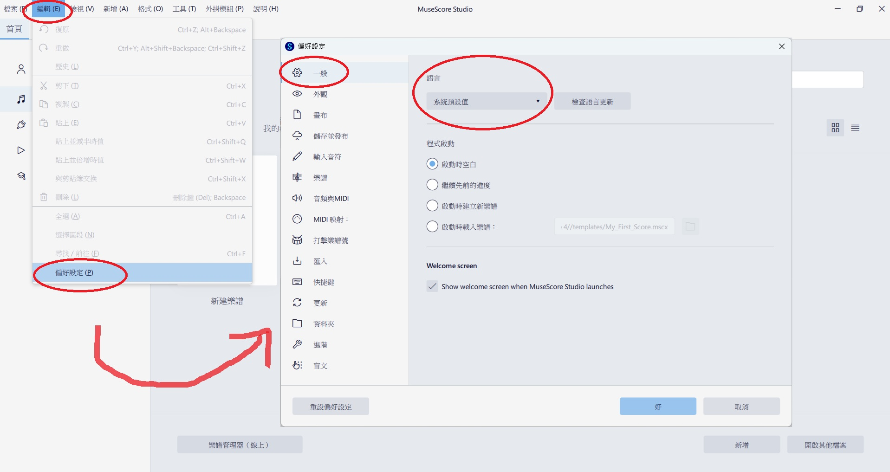
建立樂譜
- 上方選單列
檔案>新建 - 點
撥弦樂器，在這烏克麗麗有兩種可選，就依需求來選擇
尤克里里 (指法譜): 四線譜 TAB (翻譯很怪我知道XD)烏克麗麗: 五線譜
- 我以 TAB 譜為例，因此雙擊
尤克里里 (指法譜)後，按完成
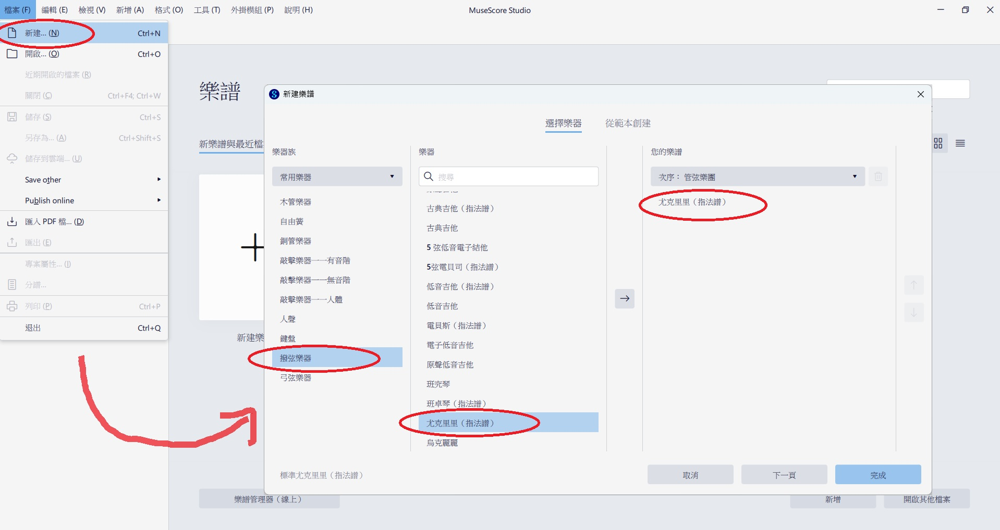
成功建立一個 TAB 四線譜~
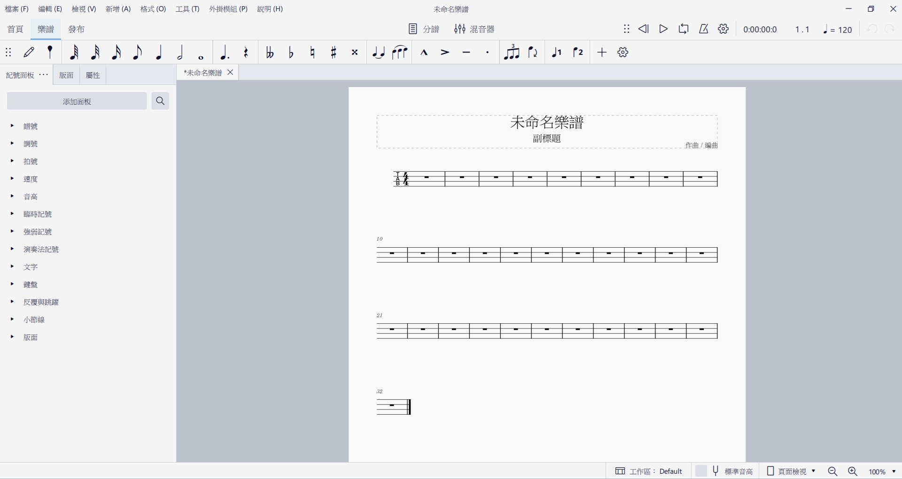
儲存樂譜
- 上方選單列
檔案>儲存 - 點擊
儲存到本機(.mscz格式)
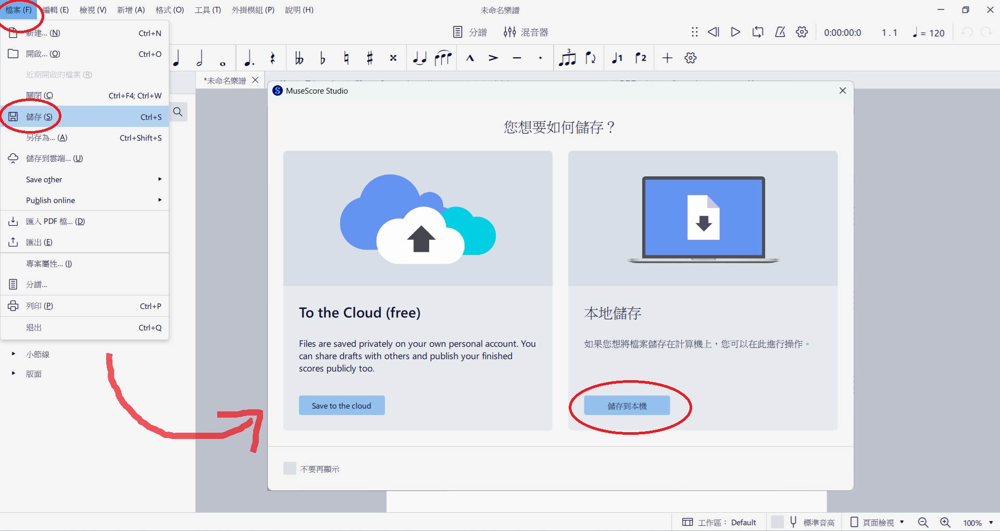
若想設定自動儲存
可以到上方選單列 > 編輯 > 偏好設定 > 儲存並發布
然後就能調整 自動儲存間隔時間
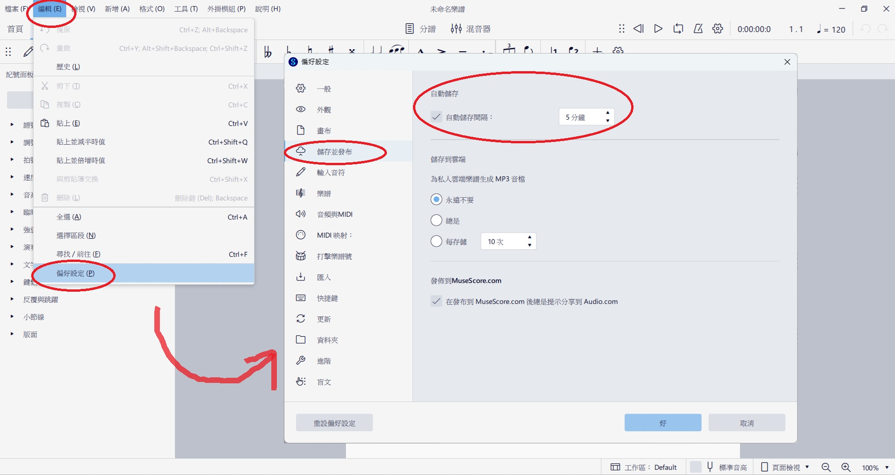
輸入四線譜
基本操作
- 滑鼠點擊要編輯的小節
- 鍵盤點擊
N(變藍底) 進到輸入模式 - 透過
上下左右移動到要輸入的位置 - 按住
Shift+數字1~7選擇音符長度 (四分音符、八分音符…) - 點擊
數字，表示按第幾格
點擊;則輸入休止符 - 點擊
ESC退出輸入模式
進階操作
點擊譜上的數字 (變藍色)，點擊 N
- 點擊
上下鍵可修改要按的格數 - 點擊
Shift+數字1~7可調整音符長度 - 點擊
Shift+左/右可調整音符的前後順序 - 點擊
Ctrl+上/下可在不同弦選擇相同的音
五線譜與 TAB 譜連動
如果想要輸入五線譜，自動顯示 TAB 指法
或輸入 TAB 指法，自動顯示五線譜的話
- 到左側
版面視窗 - 展開
烏克麗麗 - 點擊
四線指法譜右邊齒輪 > 創建關聯譜表 - 點擊
[關聯]四線指法譜右邊齒輪 > 譜表類型:標準 - 如果想要把五線譜擺上面，可以點擊
[關聯]高音譜號後，按↑調整位置
如果沒看到
版面，可以從上方選單列 > 檢視 > 版面來開啟
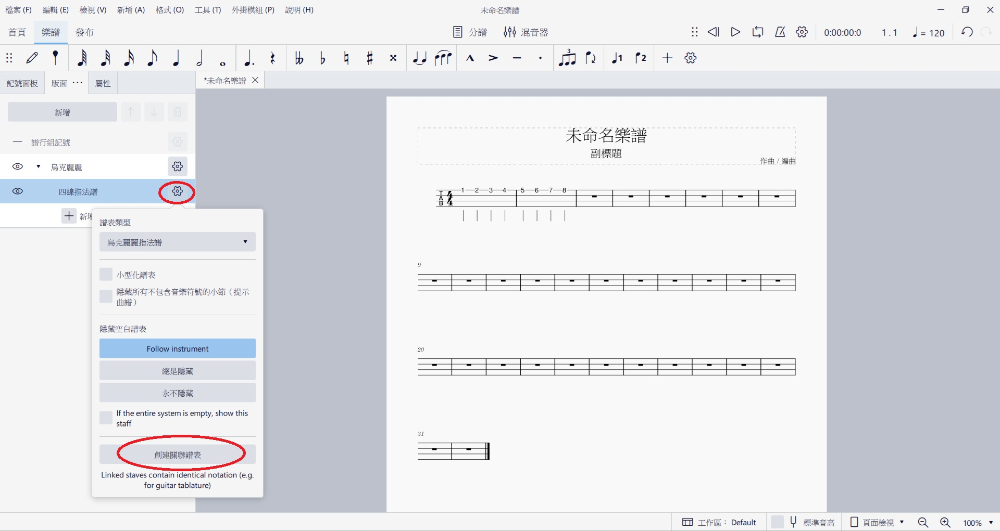
成功顯示相對應的樂譜~
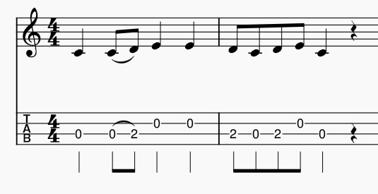
輸入五線譜
基本操作
- 滑鼠點擊要編輯的小節
- 點擊
N(變藍底) 進到輸入模式 - 透過
左右移動到要輸入的位置 - 點擊
數字1~7選擇音符長度 (四分音符、八分音符…) - 點擊
CDEFGAB來輸入音高 (Do, Re, Mi…)
點擊0則輸入休止符 - 點擊
ESC退出輸入模式
進階操作
點擊譜上的音符 (變藍色)，點擊 N
- 點擊
上下鍵可修改音高 - 點擊
數字1~7可調整音符長度 - 點擊
Shift+左/右可調整音符的前後順序 - 點擊
Ctrl+上/下可高八度或低八度
其他
刪除小節
- 按住
Shift點選要刪除的小節們 (變藍色) - 點擊右鍵 >
刪除小節
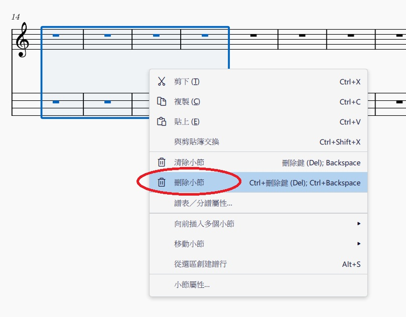
小節換行
如果想讓樂譜一排只顯示四個小節的話
先點擊第四個小節，按 Enter 就會換行了~
輸入歌詞
- 點擊譜上的數字 (變藍色)
- 點擊
Ctrl+L - 輸入歌詞，按
右繼續輸入歌詞 - 按
ESC離開編輯模式
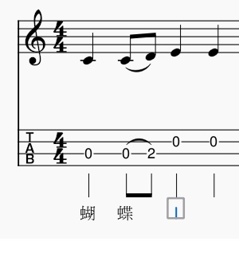
播放樂譜
右上方有一排控制播放的區域
由左到右是:
倒帶: 從樂譜(或循環片段)開頭開始播放播放：開始和停止播放循環播放：框選範圍後，點擊可設定循環播放區域；若不框選範圍，則全曲循環播放節拍器：開啟或關閉節拍器播放設定：其他播放控制相關功能播放計數器：顯示播放時間、小節與拍子播放速度：可手動調整播放速度
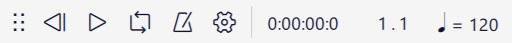
若想要改變整個樂譜的 BPM (每分鐘拍數)
- 先點擊第一個小節
- 上方選單列
新增>文字>速度記號 - 雙擊數字就可以改變 BPM
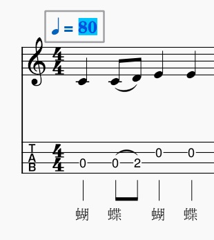
匯出樂譜
- 上方選單列
檔案>匯出 - 有很多種格式可以選擇
- PNG
- SVG
- MP3
- WAV
- …
- 點擊
匯出...
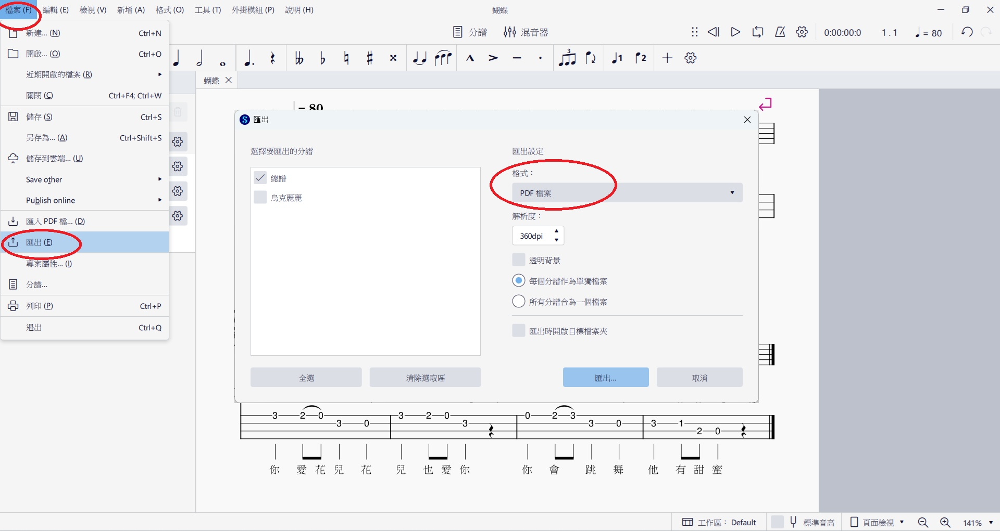
樂譜成品
《蝴蝶》樂譜完成~
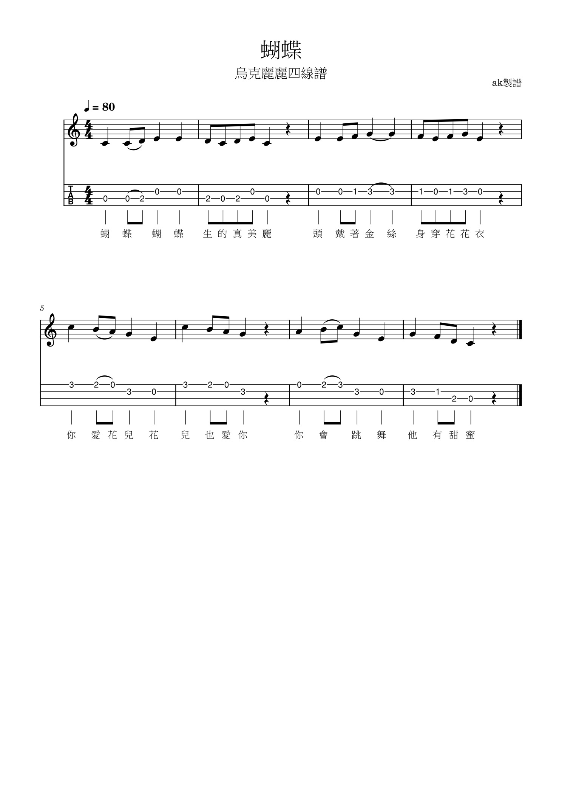
踩坑心得
-
打完音符之後，發現音符長度不對，如何修改?
a. 滑鼠點擊打錯的音 (讓它變藍色)
b. 點上方工具列的音符長度(四分音符、八分音符…)，MuseScore 會自動補休止符 -
改了音符長度以後，發現後面多了休止符，要怎麼把後面的音往前補位?
a. 滑鼠點擊想移動的第一個音
b. 按住 Shift 點想移動的最後一個音
c.Ctrl+X剪下
d. 點選要取代的第一個音或休止符
e.Crtl+V貼上 -
如何在音符中間插入休止符?
a. 點想移動的第一個音
b. 按住Shift點想移動的最後一個音
c. 滑鼠按住小節空白處 (非音符)往後拖曳，MuseScore 會自動補休止符
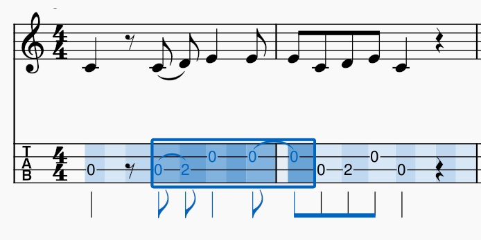
- 亂改之後，發現某幾個小節拍數亂掉，也無法插入音符或休止符?
a. 點一下那個小節 (整個小節變藍)
b. 按右鍵>小節屬性
c. 去手動修改實際上的拍數欄位 (例如 4/4)
c. 按確定之後，MuseScore 會自動補滿剩下的拍子
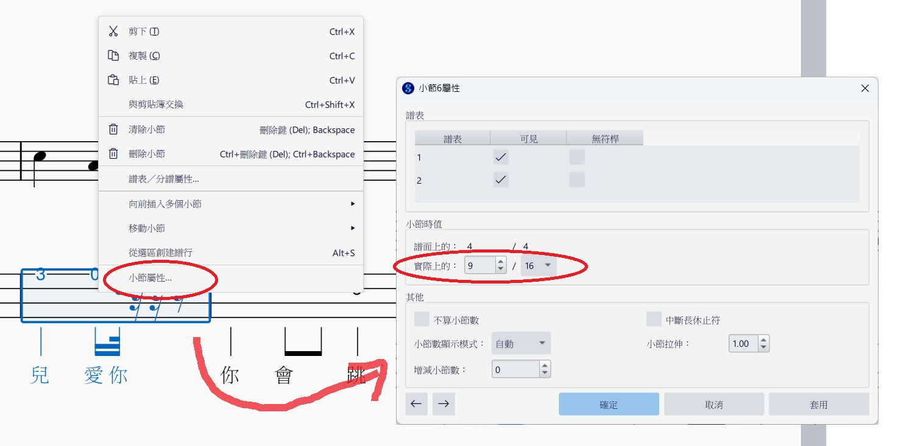
-
小節 (視覺) 寬度有的長有的短，怎麼調整成一樣的寬度?
a. 點擊小節
b. 點擊shift+{縮短
c. 點擊shift+}加長 -
匯出 PDF 後，用 Chrome 分頁開啟，標題顯示
未命名樂譜，但檔案名稱卻是正常的?
a. 上方選單列檔案>專案屬性
b. 編輯作品標題
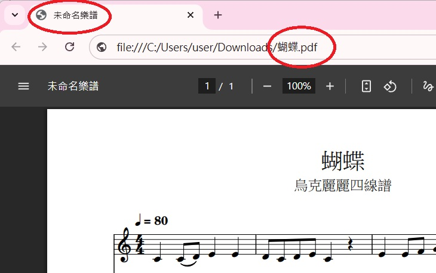
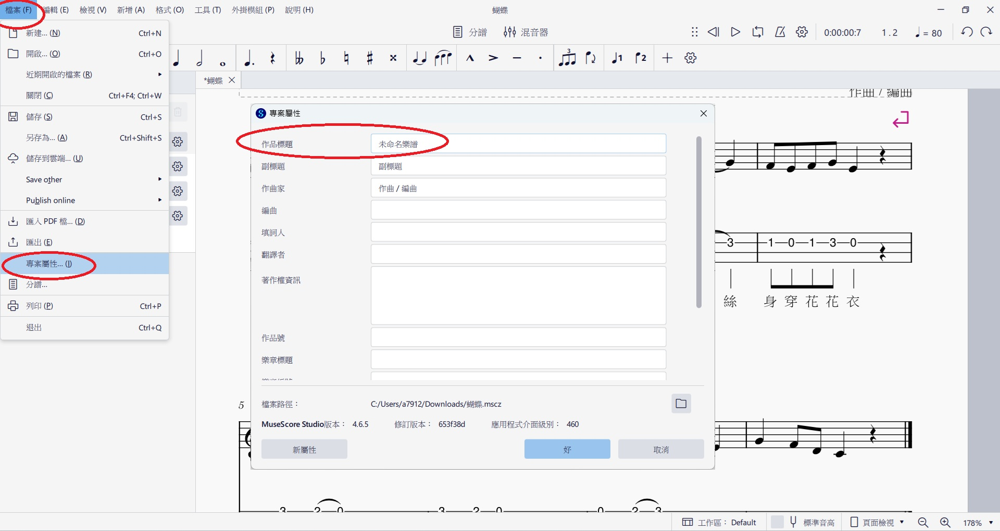